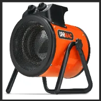
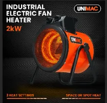
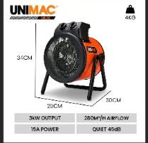
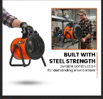
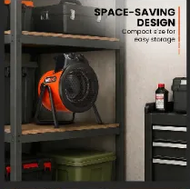
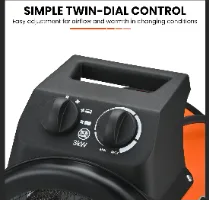
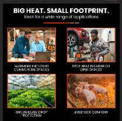
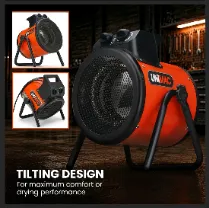
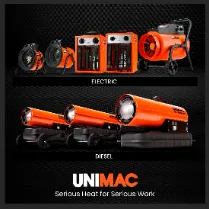

Cargando la justificación completa del diseño...
Caso UNIMAC · Campaña de producto
Convertir el calor industrial en una historia de producto clara.
Diseñé este conjunto de imágenes como una historia de producto centrada en la conversión en lugar de una colección de gráficos desconectados. El objetivo era presentar el calentador industrial UNIMAC como potente, duradero, compacto y fácil de operar, respondiendo las principales preguntas del comprador en el mismo orden en que normalmente surgen durante una decisión de compra.

11paneles cohesivos
01 · Estrategia
Diseñado en torno al proceso de decisión del comprador.
El cliente previsto es un comerciante, un tallerista, un contratista, un almacenista o un usuario agrícola. Necesitan pruebas fiables, no promesas decorativas.
¿Producirá suficiente calor y flujo de aire para un espacio de trabajo exigente?
¿Puede su construcción de acero soportar un entorno industrial?
¿Es portátil, compacto y fácil de almacenar entre trabajos?
¿Se puede dirigir y ajustar el flujo de aire sin una interfaz compleja?
¿Funcionará en el garaje, taller o zona de trabajo específica del cliente?
¿Son fáciles de verificar las dimensiones, el peso y las especificaciones de rendimiento?
02 · Dirección visual
Calor, fuerza y confianza técnica.
El naranja comunica rendimiento activo. El negro refuerza la durabilidad. El blanco crea claridad en los paneles técnicos. La tipografía condensada en negrita y los titulares breves hacen que cada beneficio sea legible en segundos, incluso en dispositivos móviles.


03 · Secuencia de campaña
Un mensaje por panel. Una historia de conversión conectada.

Confianza · 03
Construido con resistencia de acero.
La portabilidad, la construcción protectora y el contexto real del taller hacen visible la durabilidad en lugar de simplemente reclamarla.

Relevancia · 04
Lo compacto se vuelve práctico
Un entorno de almacenamiento traduce dimensiones abstractas en un beneficio inmediato para el taller.

Comprensión · 07
Eliminar dudas operativas
Un corte cercano hace que el sistema de dos diales y el acabado del producto sean fáciles de inspeccionar.

Casos de uso · 08
Ayude a los compradores a reconocer su mundo
Talleres, espacios automotrices y entornos agrícolas amplían la relevancia manteniendo el producto posicionado como equipamiento profesional.

Función · 09
Calor directo donde sea necesario
Las imágenes heroicas y los ángulos de soporte conectan un marco ajustable para calentar y secar enfocados.

Marca · 11
Cierra con confianza
El panel final coloca el calentador dentro de una gama creíble de equipos de calefacción especializados.
04 · Flujo de trabajo de producción
Fotografía, composición y precisión gráfica.
- 01
Revisión de clientes y categorías.
Mapeó las características del producto frente a las preocupaciones del comprador y las convenciones de la competencia antes de diseñar cualquier gráfico.
- 02
Planificación de secuencia y fotografía.
Se asignó un objetivo de comunicación a cada panel, luego se planificaron vistas de tres cuartos, de control, de transporte y de inclinación.
- 03
Composición Photoshop
Manejé enmascaramiento, retoque de metales, perspectiva, sombras de contacto, color ambiental y derrame de calor controlado para ambientes creíbles.
- 04
Sistema Illustrator
Creó la tipografía, los íconos, las líneas de medición, las cuadrículas y las tablas de especificaciones como un lenguaje visual reutilizable.
- 05
Verificación y control de calidad móvil
Verificó la coherencia técnica, probó las afirmaciones y redujo cada panel al tamaño móvil del mercado antes de la exportación.
05 · Integridad del diseño
La credibilidad es parte de la creatividad.
Utilice lenguaje verificado. “Caudal de aire de 280 m³/h” es más exacto que prometer un volumen de calefacción garantizado.
Conecte funciones con resultados. El marco ajustable se convierte en "calor directo donde se necesita". Las dimensiones compactas facilitan el almacenamiento.
Mantenga el calor creíble. El brillo naranja aclara la función, pero los efectos excesivos pueden tergiversar el producto físico.
Diseño para el cliente real. Los talleres y los entornos de trabajo refuerzan la relevancia mejor que las imágenes genéricas del estilo de vida doméstico.
Resultado
Un sistema de imagen cohesivo que equilibra la relevancia emocional con la prueba práctica.
La campaña guía a los compradores desde el reconocimiento y el interés hasta la confianza, la comprensión, la validación técnica y la confianza en la marca.
Volver a Creatividades ↗